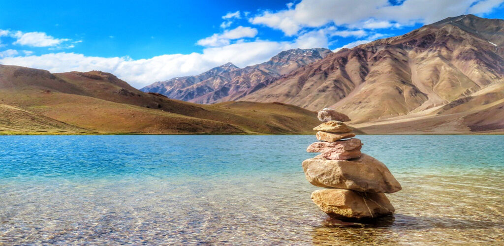

My favorite travel destination:- Chandra Taal Manali
(Chandra Taal Manali)

Chandra Taal :- (lit.'moon lake') is a lake in the upper Chandra valley of the Lahul and Spiti district of Himachal Pradesh, India.
Chandra Taal is near the source of the Chandra River. Despite the rugged and inhospitable surroundings, it is in a protected niche with some flowers and wildlife in summer.
It is a favourite spot for tourists and high-altitude trekkers. It is usually associated with Spiti, although geographically it lies in the watershed of the Chandra River of Lahaul.
Kunzum La separates Lahaul and Spiti valleys.Chandra Taal is a tourist destination for trekkers and campers. The lake is accessible by road from Batal and by road as well as on foot
from Kunzum Pass from late May to early October. The road to Chandra Taal branches off from NH-505 about 2.9 kilometres (1.8 mi) from Batal and 8 km (5.0 mi) from Kunzum Pass.
This 12 km (7.5 mi) motor road runs as far as a parking lot 1 kilometre (0.62 mi) from the lake. One has to travel on foot for the final 1 kilometre1 km (0.62 mi). It takes approximately
two hours from Kunzum Pass to Chandra Taal. Chandra Taal is also accessible from Suraj Tal, 30 km (19 mi) away.
Fauna and flora :-There are vast meadows on the banks of the lake. During springtime, these meadows are carpeted with hundreds of varieties of wild flowers. In 1871, Harcourt,
Assistant Commissioner of Kullu, reported that there was a plain of good grass to the north of Chadra Taal, where shepherds brought large herds for grazing from Kullu and Kangra. Due to overgrazing,
the grasslands are now degraded.Chandra Taal is home to a few species such as the Snow Leopard, Snow Cock, Chukor, Black Ring Stilt, Kestrel, Golden Eagle, Chough, Red Fox, Himalayan Ibex, and Blue Sheep.
Over time, these species have adapted to the cold arid climate, intense radiation, and oxygen deficiency by developing special physiological features. Migratory species such as the Ruddy shelduck are found in summer.